B2B · ERP · UX audit
Auditing order creation in a bakery ERP
WaWiAssist is HS-Soft’s order management system for bakeries. I used PostHog analytics and a short stakeholder survey to choose which tasks to audit, then studied session recordings and heatmaps of order creation. I proposed changes to navigation, the customer filter and search.

Context
When I joined HS-Soft, auditing the products and proposing improvements was part of my role. WaWiAssist is used for orders, production planning, picking and invoicing.
Goal
Prioritise areas for improvement and propose changes to reduce time on task in the application's key workflows.
Outcome
The navigation and filter proposals were approved for the backlog. The first stage of the sidebar was built while I was there. Expanded search was blocked by database constraints. There are no post-release measurements.
Choosing what to audit first
I started with page views, time on page and clicks in PostHog. Many users entered through the console, which loaded the customer page first. New users also clicked around while learning the product. To focus on established use, I asked a stakeholder to identify experienced users among the most active accounts and created a cohort for them.
For this cohort, I combined the three page metrics into a user priority score for each page.
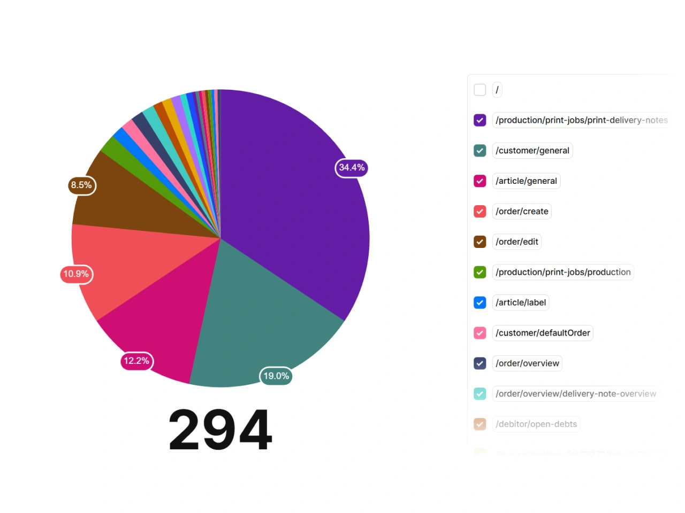
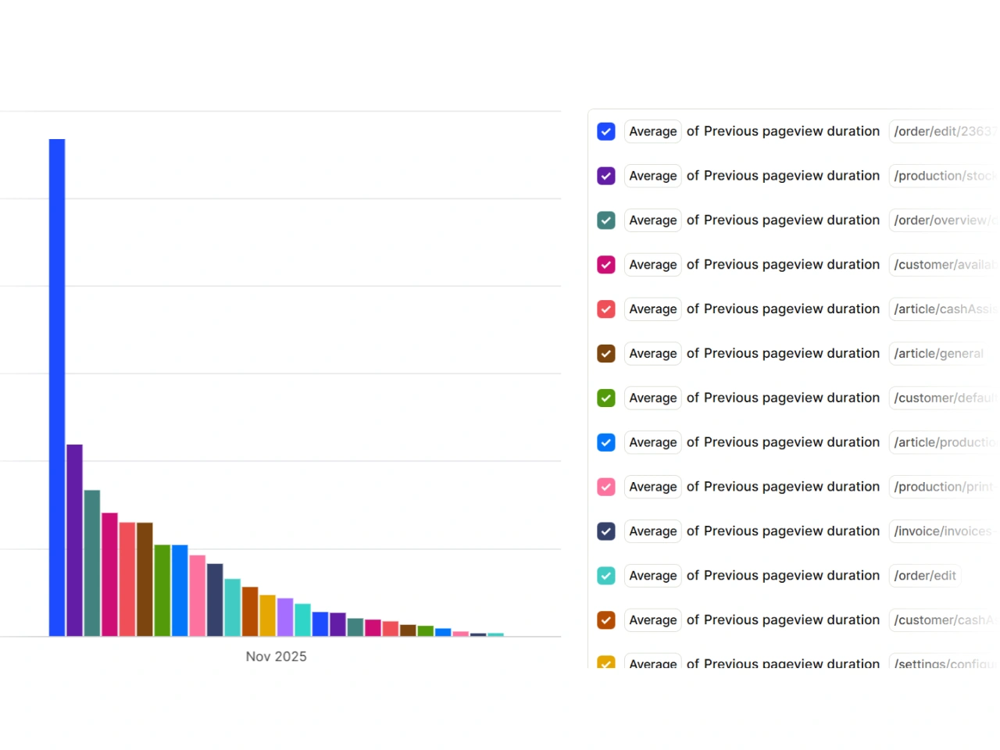
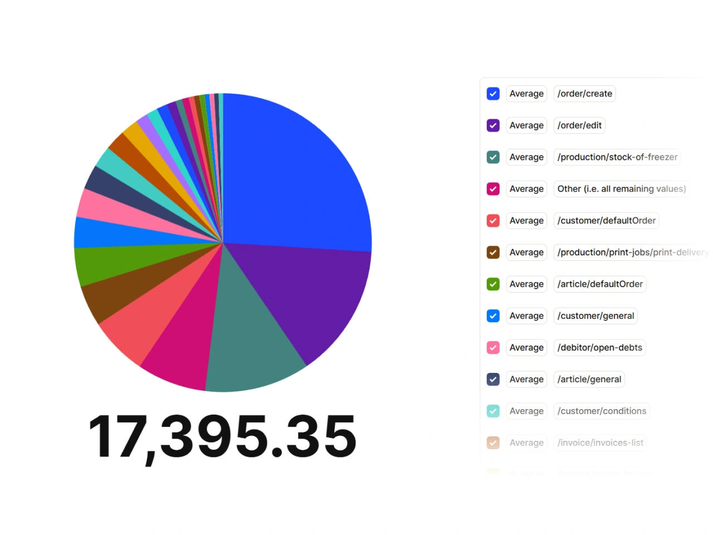
I used session recordings and click heatmaps to identify the tasks people performed on those pages. Each task received the user priority score of the page where it took place.
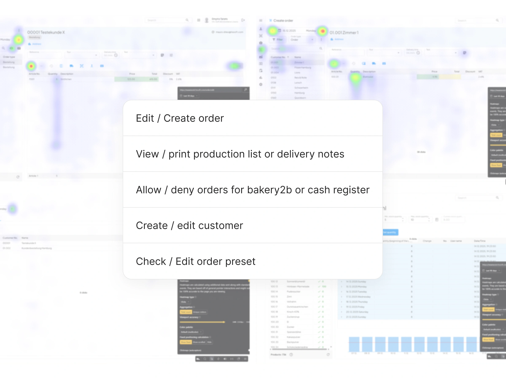
I then asked stakeholders to rate each task's importance to the business from 0 to 10. A score of 0 meant that losing the feature unexpectedly would not matter; 10 meant it was critical.
I combined the user priority scores with the stakeholder scores to set the audit priorities. Creating and editing orders had the highest combined score, so I focused the audit there.
| Task | User priority score | Business importance | Combined priority |
|---|---|---|---|
| Create / edit order | 10 | 9 | 9.5 |
| Production list or delivery notes | 7 | 10 | 8.5 |
| Allow / deny orders | 7 | 7 | 7 |
| Create / edit customer | 4 | 7 | 5.5 |
| Order preset | 1 | 8 | 4.5 |
Mapping how orders are created
Creating and editing orders followed nearly identical flows. We chose to focus on creation first as the more important task, since the same improvements would also apply to editing.
I returned to the recordings to study the steps in detail. I logged actions in FigJam and mapped the current order-creation flow. Heatmaps helped locate interactions on the page; the recordings showed their sequence.
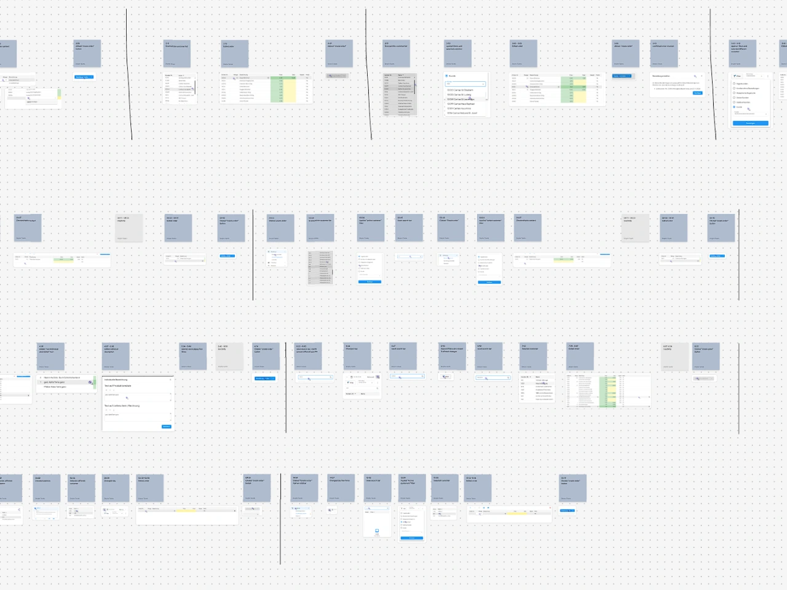
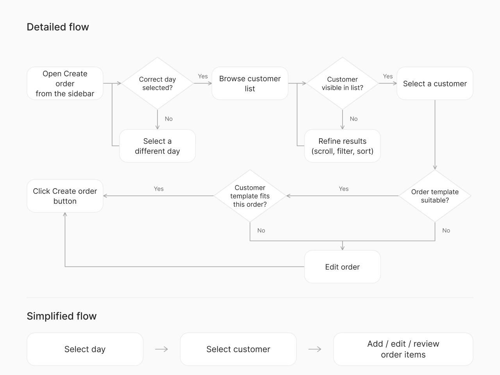
Key findings
From the session recordings and heatmaps, I identified three recurring patterns:
- Repeated navigation. Around 60% of the users I observed clicked Create order in the sidebar after filling out an order, even though they were already on that page.
- Time spent finding a customer. Finding a customer accounted for roughly 80% of the time spent creating an order in the recordings I reviewed.
- Hidden filter value. The customer filter’s selected value was hidden behind the Filter button. Most observed users tried different values while looking for a customer.
Turning observations into hypotheses
I used these observations to form three hypotheses about how the interface could support faster order creation.
- Navigation: Keeping the sidebar open by default, with the current page highlighted, could help users see that Create order was already open and avoid clicking its navigation item again.
- Filter: Showing the single customer filter directly in the toolbar could remove the extra step of opening the Filter button to see or change its value.
- Search: Showing matching customers outside the active filter could help people find a customer without repeatedly changing the filter.
Keep the sidebar open by default
The sidebar expanded only on hover, and Create order was nested in a submenu. Its navigation item was hidden while users filled out an order.
I proposed keeping the sidebar open by default, with the current page highlighted. This would let users see that Create order was already open. They could still collapse the sidebar when they needed more space.
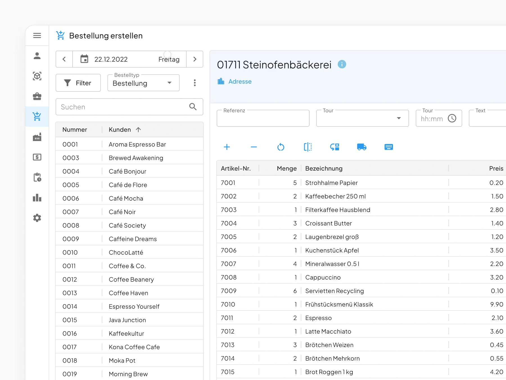
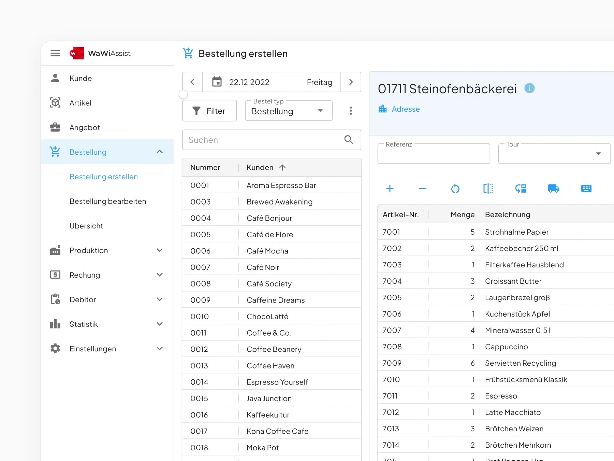
Navigation and space with the new sidebar
With automatic expansion on hover removed, users needed a way to reach sub-items while the sidebar was collapsed. I proposed a flyout on hover so they could switch pages without reopening the whole sidebar. The app consisted almost entirely of tables, sometimes several on one page. Keeping the sidebar open left less room for content, so I checked every page at 1920, 1440 and 1280 px to see whether the change would cause any layout problems.
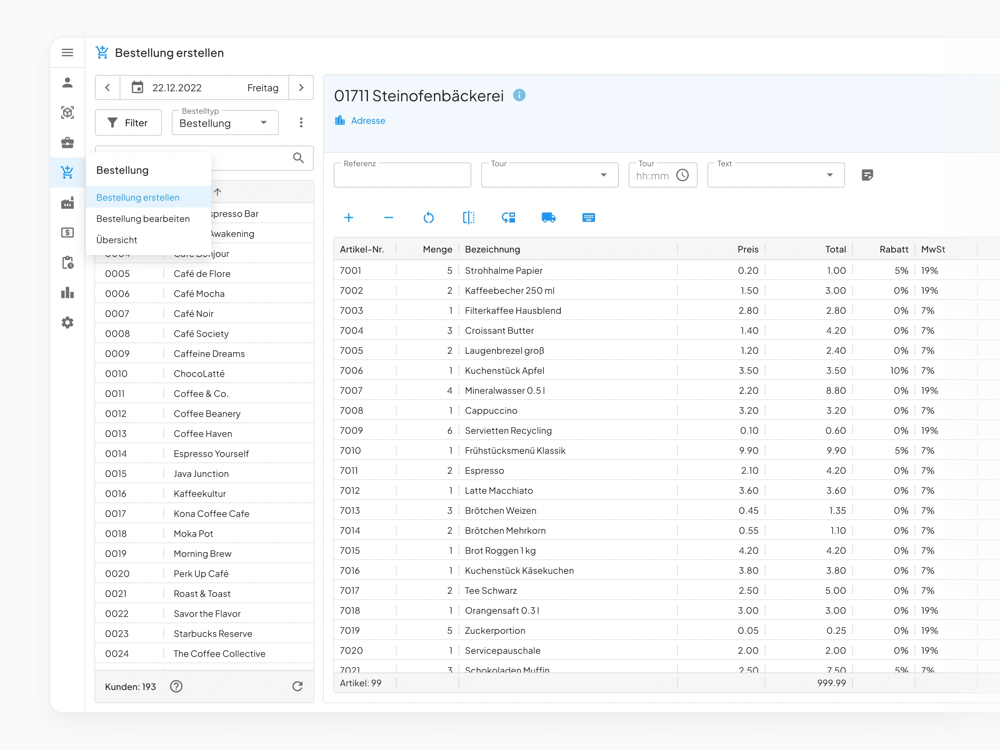
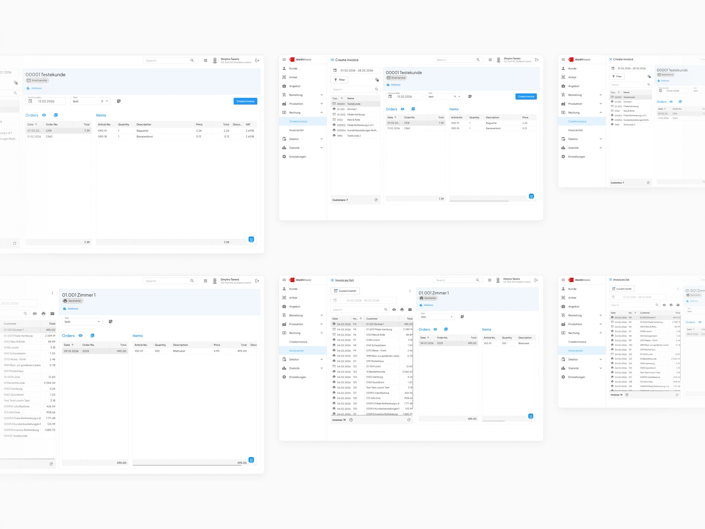
Show the filter directly in the toolbar
There was only one customer filter, but it was hidden behind a generic Filter button. People had to open that button to see or change the filter's value.
I proposed placing the customer filter directly in the toolbar, so its current value would stay visible and people could change it in one step.
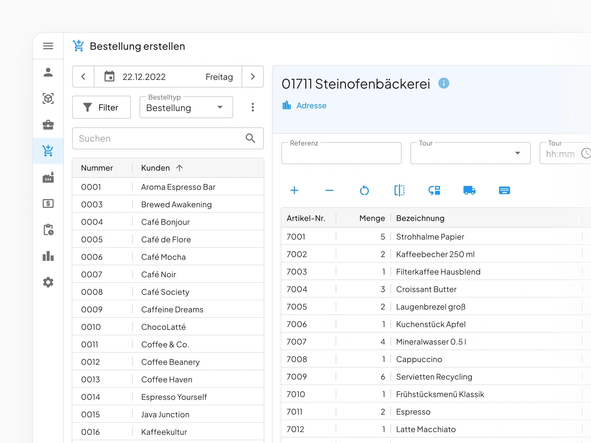
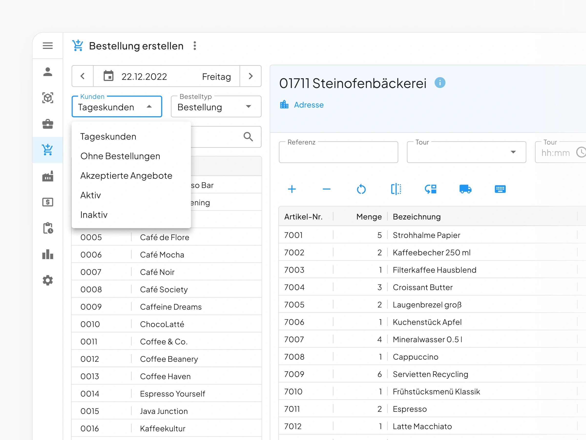
Show the matches hidden by filters
The repeated filter changes suggested that people needed to see matching customers outside the active filter.
I proposed showing matching customers excluded by the active filter in a separate group, so users could find them without repeatedly changing the filter.
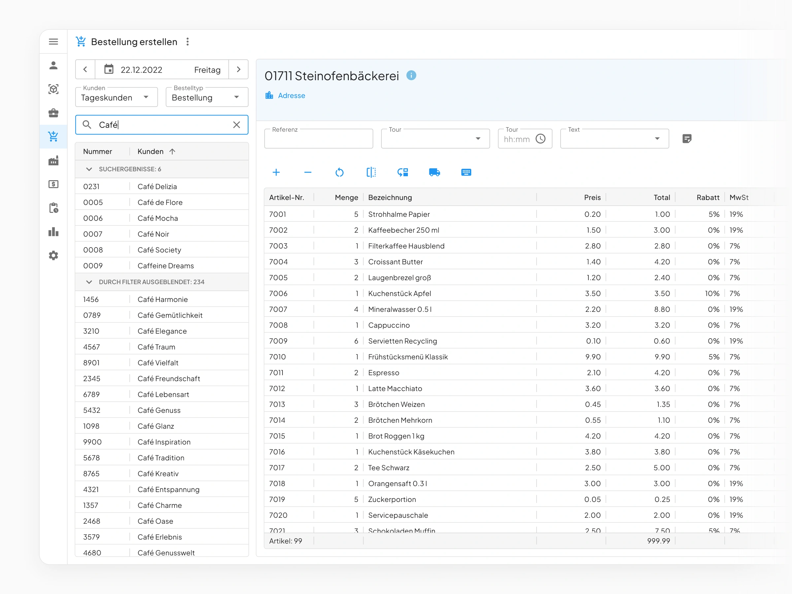
Preparing to measure the changes
I set up tracking in PostHog to evaluate the proposed changes. I proposed comparing similar orders from the same cohort of experienced users before and after release, tracking:
- Order creation time: median time from starting a new order to a confirmed save.
- Customer selection time: median time to find and select a customer, including time spent checking or changing the filter.
- Repeated navigation: the share of order-creation attempts where users click Create order again while already on that page, before saving.
- Repeated filter changes: how often users switch filter values while keeping the same search query.
A/B testing was declined for technical reasons.
Team review and implementation
I discussed all three proposals with the team. The navigation and filter changes were approved and added to the backlog.
The team supported the expanded search idea, but its implementation was rejected because it was too difficult with the existing database.
The sidebar implementation was split into stages, and the first stage was completed while I was there.
Later, the company stopped developing this version of the product. I cannot confirm a wider rollout and do not have post-release measurements.